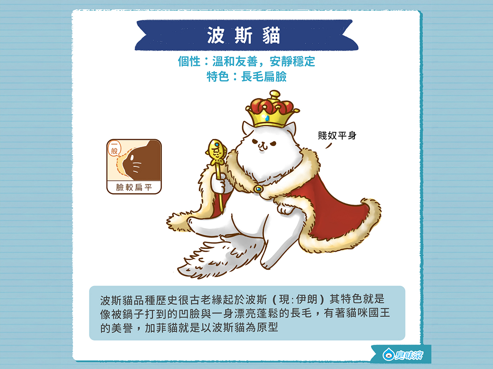
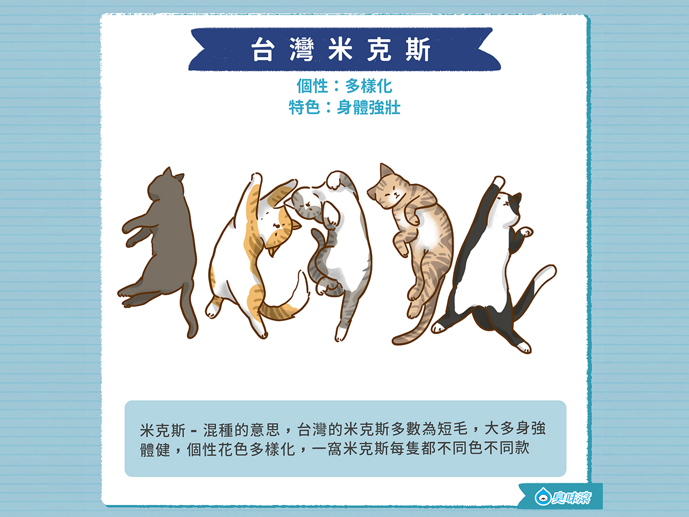
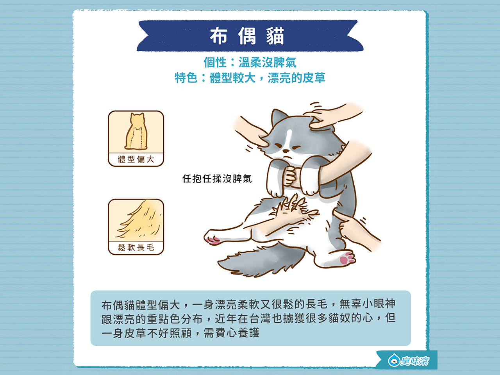
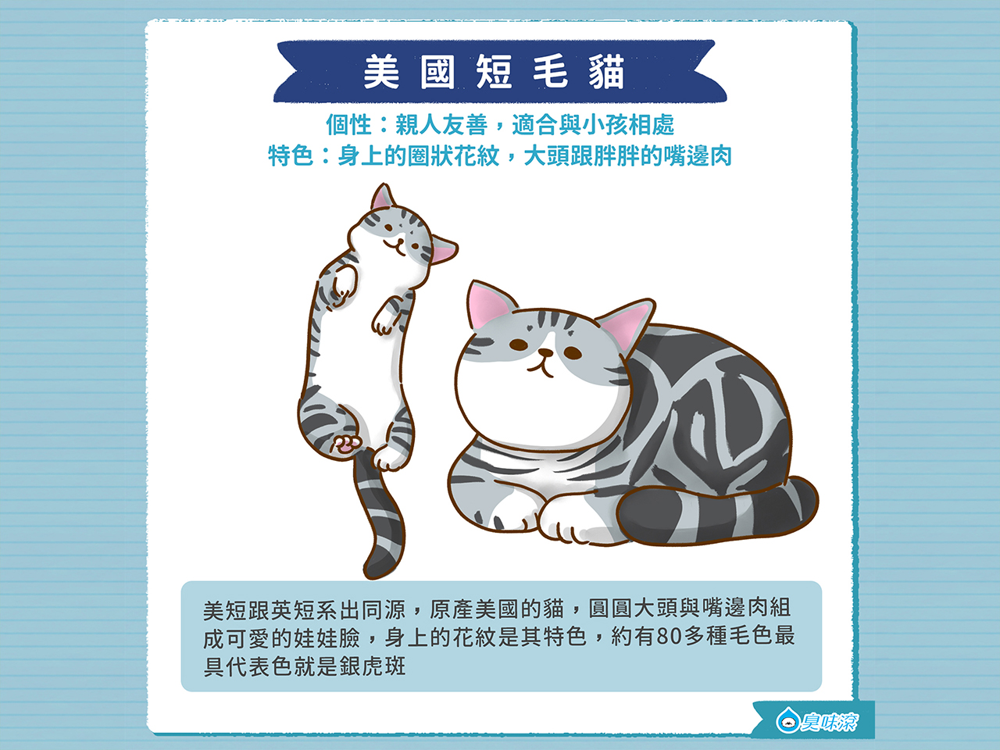

波斯貓

波斯貓緣起於波斯（就是現在的伊朗），品種歷史古老，其特色就是像被鍋子打到的凹臉與一身漂亮蓬鬆的長毛， 有著「貓咪國王」的美譽，是從加菲貓培育而來的，可說是長毛版的加菲貓！
個性：溫和友善，安靜穩定
特色：長毛扁臉
米克斯

米克斯即為混種的意思，而台灣米克斯多為短毛，身強體健，個性花色多樣化，就像驚喜包！ 常常一窩出來每隻都不同色不同款，好似在買福袋一樣。
個性：多樣化
特色：身體強壯
布偶貓
布偶貓雖然沒有挪威森林貓與緬因貓大，但比起其他貓種算是偏大型了。 一身漂亮柔軟又很鬆的長毛，加上無辜的小眼神跟漂亮的重點色分布，擄獲許多貓奴的心啊！ 不過那一身皮草並不好照顧，需要貓奴們多多費心養護。
個性：溫柔沒脾氣，很適合軟軟的抱著一整天也不會膩
-
特色：體型較大，漂亮的皮草與溫柔好相處的個性
英國短毛貓
美短跟英短系出同源，都是歐洲短毛貓類別，顧名思義就是原產美國貓，跟著早期移民一起到歐洲的！ 他們最吸引人的，就是圓圓大頭與嘴邊肉，組成超可愛的一張娃娃臉！ 身上的花紋也多有變化，大約有80多種毛色和外觀，最代表色就是銀虎斑了。
個性：非常親人友善，很適合與小孩相處，是很適合家庭的貓咪種類
特色：身上的圈狀花紋，大頭跟胖胖的嘴邊肉

